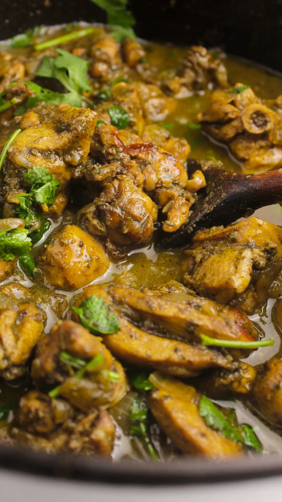

Trinidadian Curry Chicken

Trinidadian style Curry Chicken
A slightly unique way to make Curry Chicken that originated on the caribbean island of Trinidad
Ingredients
- 2 1/2 Lbs Chicken Legs and Thighs skinless and bone-in
- 1 Yellow Onion chopped
- 4 Whole Cloves Garlic
- 3 Tbsp Curry Powder
- 1 Tbsp Garam Masala
- 2 Tbsp Parsley, Cilantro, Thyme
- 2 Tbsp Vegetable Oil
- 1/2-1 Cup of Water
- Salt and Black Pepper to Taste
Steps
- Cut chicken into small pieces and season with parsley, cilantro, thyme, salt and black pepper. Marinate for at least 30 minutes.
- In a saucepan, heat oil in over medium heat. Add cloves of garlic and cook until fragrant and medium brown. Add curry powder and garam masala. Cook for about 1 minute until spices become fragrant and darken slightly; stir frequently.
- Stir in marinated chicken and chopped onions. Add water and stir. Bring to a simmer and cover. Cook for about 20 – 30 minutes until chicken is tender and cooked through; stir occasionally. Add more water if you want more sauce. Season with salt to taste.
- Serve warm with rice.